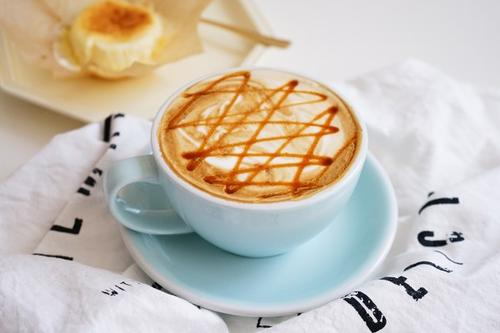

要来杯咖啡吗？
要来杯咖啡吗？
要来杯咖啡吗？
要来杯咖啡吗？
| 饮品 | 价格 |
|---|---|
| 卡布奇诺 | 20 |
| 拿铁 | 20 |
| 美式咖啡 | 20 |
| 焦糖玛奇朵 | 20 |
卡布奇诺
我说道，“爸爸，你走吧。”他望车外看了看，说，“我买几个橘子去。你就在此地， 不要走动。”我看那边月台的栅栏外有几个卖东西的等着顾客。走到那边月台， 须穿过铁道，须跳下去又爬上去。父亲是一个胖子，走过去自然要费事些。
拿铁
我说道，“爸爸，你走吧。”他望车外看了看，说，“我买几个橘子去。你就在此地， 不要走动。”我看那边月台的栅栏外有几个卖东西的等着顾客。走到那边月台， 须穿过铁道，须跳下去又爬上去。父亲是一个胖子，走过去自然要费事些。
美式咖啡
我说道，“爸爸，你走吧。”他望车外看了看，说，“我买几个橘子去。你就在此地， 不要走动。”我看那边月台的栅栏外有几个卖东西的等着顾客。走到那边月台， 须穿过铁道，须跳下去又爬上去。父亲是一个胖子，走过去自然要费事些。
焦糖玛奇朵

我说道，“爸爸，你走吧。”他望车外看了看，说，“我买几个橘子去。你就在此地， 不要走动。”我看那边月台的栅栏外有几个卖东西的等着顾客。走到那边月台， 须穿过铁道，须跳下去又爬上去。父亲是一个胖子，走过去自然要费事些。
版权归属@王布斯